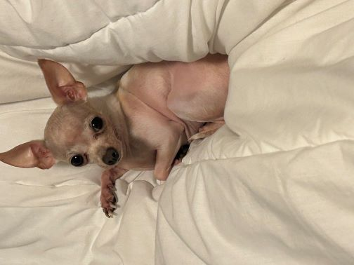

My mother name is Zovieda Avendano and she was born in Ayoquezco de Aldama, in a village called Zapoteca which is located in Oaxaca, Mexico, there she lived out her childhood and her teenage years. Then when she was finshed with highschool, she moved to Mexico City where she went to study to become a nurse, she studied to become a nurse in the Mexican Army University. She later went to go study public accounting, while being a soldier in the Mexican army, at the National Polytechnic Insitute -which was at the time the best university to go to for that major. After her studies she conintued being a soldier, she was transferred to the Presidency of the Republic as a public servant. Which later she was commissioned to Los pinos as a administrative coordinator of the Presidency of the Mexican Rrepublic. and then later she retired as a public servent and a military officer.
My fathers name is Juancarlos Felipe and she was born in callao, Peru when he was very young he came to Chicago later he spent his teenage years here in Chicago and went to Von Steben highschool, at the same time he started living on his own at 17 years old. He then went to Wilbur Wright College to get his degree in photography. Then, he started working at Jewl Osco for about 9 years, he then decided to get a job in ISD -International security dept- at American Airlines.
I have one small dog, the dog is named Machito
